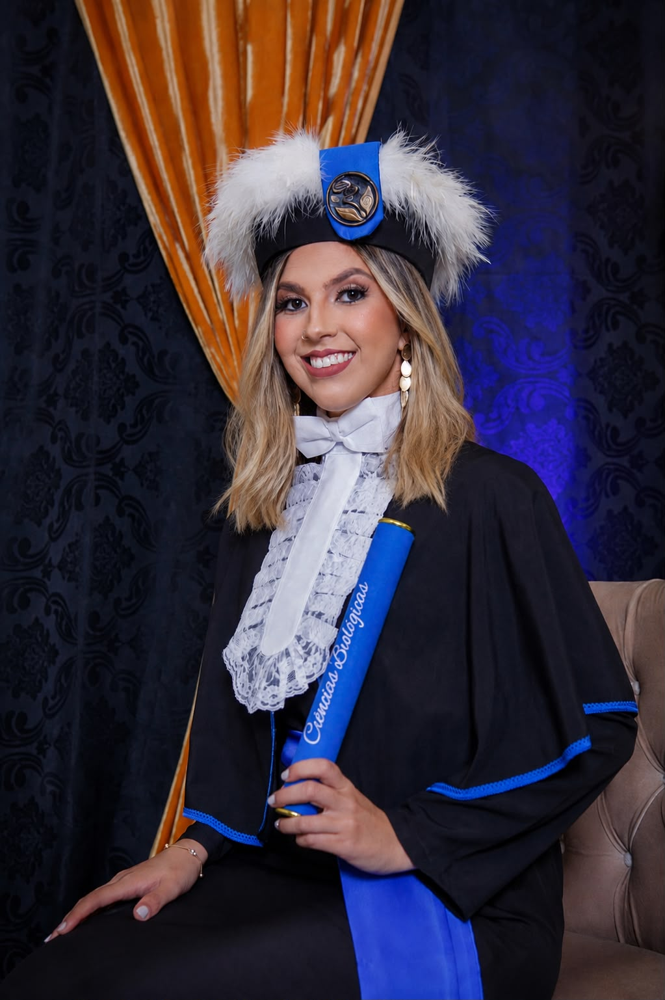

Olá! Meu nome é Fabiele Pires e sou apaixonada por Biologia e pelo ensino. Meu objetivo é ajudar cada aluno a aprender de forma clara, prática e personalizada, respeitando seu ritmo e suas necessidades.
Missão: Oferecer aulas particulares de Biologia com qualidade, incentivando o conhecimento científico e contribuindo para o sucesso escolar.
Visão: Ser referência em aulas particulares de Biologia, com dedicação, ética e excelentes resultados.
Valores: Respeito, organização, responsabilidade, compromisso e aprendizagem contínua.
Público-alvo: Ensino Fundamental, Ensino Médio, Pré-Vestibular e reforço escolar.
Aulas objetivas e fáceis de entender.
Cada aluno possui um plano personalizado.
Aulas presenciais e on-line.
Exercícios, simulados e acompanhamento da evolução.